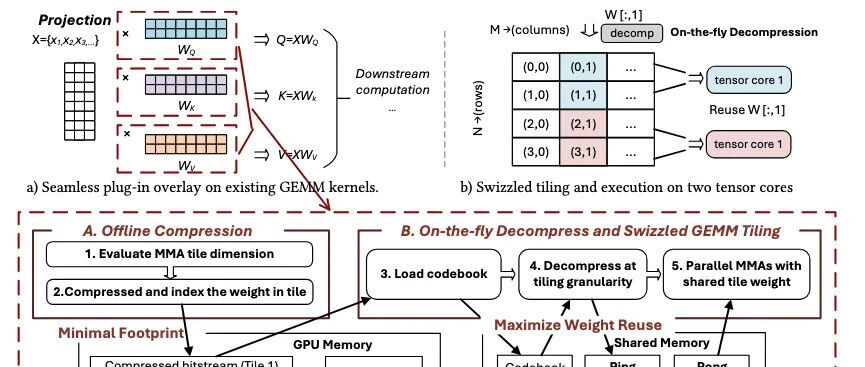
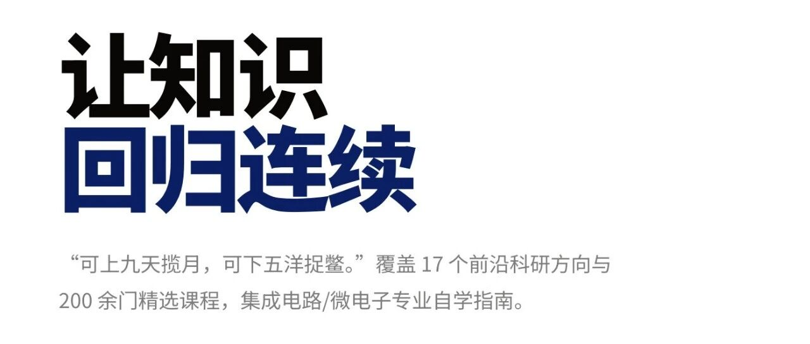
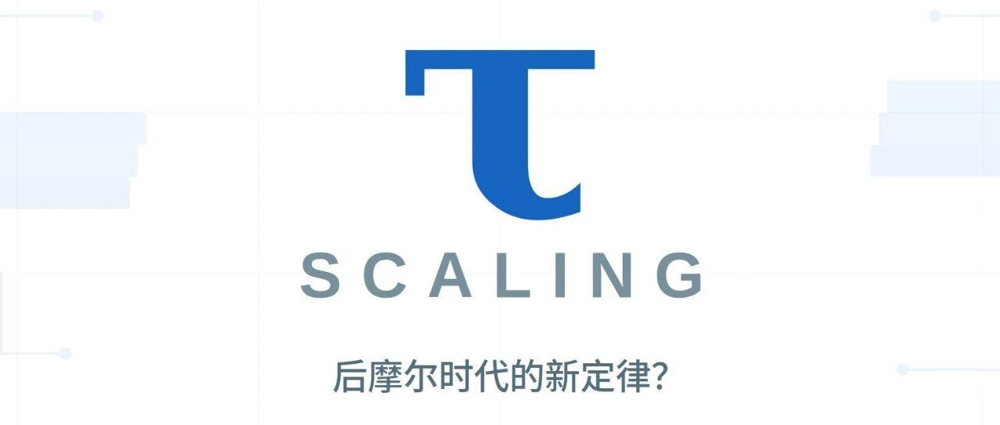

Agent 元年，我们将要回答的问题
What AI agents mean for chip design, computing systems, and the structure of the industry.
Predicted AI–EDA partnerships 11 days before the OpenAI–Synopsys deal on Sep. 30, 2026. Synopsys shares jumped 10% the next day (Reuters).
BEYOND RESEARCH
I enjoy writing in Chinese about AI, both as a technology and as a force shaping society.
What AI agents mean for chip design, computing systems, and the structure of the industry.
Predicted AI–EDA partnerships 11 days before the OpenAI–Synopsys deal on Sep. 30, 2026. Synopsys shares jumped 10% the next day (Reuters).

An introduction to ANS, from its mathematical intuition to efficient storage of AI model weights.

The experience and motivation behind IC Guide, and the search for a clearer path through IC education.

A perspective on Huawei’s τ scaling law and system design beyond transistor scaling.
How computer architecture has evolved across hardware, compilers, and runtime scheduling.
Looking beyond existential-risk narratives to how AI changes self-understanding, relationships, and agency.
我与我许多同行，都无法接受一个由少数富人与大企业垄断最强 AI 的世界；但静言思之，似乎我们也同样无法想象一个人人都拥有超强 AI 外置大脑的社会。
Reflections on AI’s effects on information, everyday life, surveillance, and warfare.